Per prima cosa installiamo le librerie necessarie
import pandas as pd
import numpy as np
import seaborn as sns
from sklearn.datasets import load_breast_cancer
from sklearn.datasets import load_wine
import numpy as np
import seaborn as sns
from sklearn.datasets import load_breast_cancer
from sklearn.datasets import load_wine
wine = load_wine()
X = wine.data
from sklearn.model_selection import train_test_split
X_train, X_test, y_train, y_test = train_test_split(X,y, test_size= 0.2, random_state = 5)
from sklearn.pipeline import make_pipeline
from sklearn.decomposition import PCA
from sklearn.naive_bayes import GaussianNB
from sklearn import metrics
import matplotlib.pyplot as plt
RANDOM_STATE = 42
FIG_SIZE = (15, 9)
# Fit to data and predict using pipelined GNB and PCA.
unscaled_clf = make_pipeline(PCA(n_components=2), GaussianNB())
unscaled_clf.fit(X_train, y_train)
pred_test = unscaled_clf.predict(X_test)
# Fit to data and predict using pipelined scaling, GNB and PCA.
std_clf = make_pipeline(StandardScaler(), PCA(n_components=2), GaussianNB())
std_clf.fit(X_train, y_train)
pred_test_std = std_clf.predict(X_test)
# Extract PCA from pipeline
pca = unscaled_clf.named_steps['pca']
pca_std = std_clf.named_steps['pca']
# Use PCA without and with scale on X_train data for visualization.
X_train_transformed = pca.transform(X_train)
scaler = std_clf.named_steps['standardscaler']
X_train_std_transformed = pca_std.transform(scaler.transform(X_train))
# visualize standardized vs. untouched dataset with PCA performed
fig, ax1 = plt.subplots(ncols=1, figsize=FIG_SIZE)
for l, c, m in zip(range(0, 3), ('blue', 'red', 'green'), ('^', 's', 'o')):
ax1.scatter(X_train_transformed[y_train == l, 0],
X_train_transformed[y_train == l, 1],
color=c,
label='class %s' % l,
alpha=0.5,
marker=m
)
ax1.set_title('Training dataset Wine after PCA')
ax1.set_xlabel('1st component')
ax1.set_ylabel('2nd component')
ax1.legend(loc='upper left')
ax1.grid()
plt.tight_layout()
plt.show()
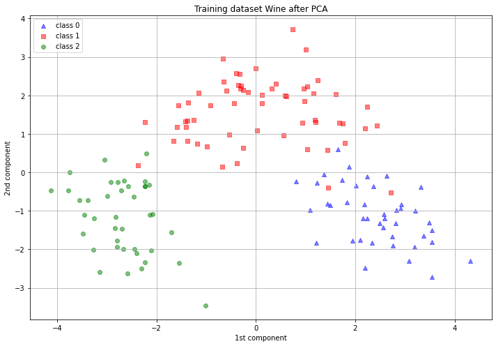
unscaled_clf = make_pipeline(PCA(n_components=2), GaussianNB())
unscaled_clf.fit(X_train, y_train)
pred_test = unscaled_clf.predict(X_test)
# Fit to data and predict using pipelined scaling, GNB and PCA.
std_clf = make_pipeline(StandardScaler(), PCA(n_components=2), GaussianNB())
std_clf.fit(X_train, y_train)
pred_test_std = std_clf.predict(X_test)
# Extract PCA from pipeline
pca = unscaled_clf.named_steps['pca']
pca_std = std_clf.named_steps['pca']
# Use PCA without and with scale on X_train data for visualization.
X_train_transformed = pca.transform(X_train)
scaler = std_clf.named_steps['standardscaler']
X_train_std_transformed = pca_std.transform(scaler.transform(X_train))
# visualize standardized vs. untouched dataset with PCA performed
fig, ax1 = plt.subplots(ncols=1, figsize=FIG_SIZE)
for l, c, m in zip(range(0, 3), ('blue', 'red', 'green'), ('^', 's', 'o')):
ax1.scatter(X_train_transformed[y_train == l, 0],
X_train_transformed[y_train == l, 1],
color=c,
label='class %s' % l,
alpha=0.5,
marker=m
)
ax1.set_title('Training dataset Wine after PCA')
ax1.set_xlabel('1st component')
ax1.set_ylabel('2nd component')
ax1.legend(loc='upper left')
ax1.grid()
plt.tight_layout()
plt.show()
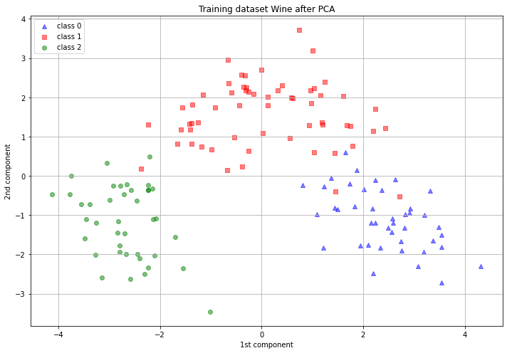
from sklearn.preprocessing import StandardScaler
sc = StandardScaler()
X_train = sc.fit_transform(X_train)
X_test = sc.transform(X_test)
X = sc.transform(X)
# Fitting classifier to the Training set
from sklearn.svm import SVC
from sklearn.metrics import confusion_matrix, classification_report
classifier = SVC()
classifier.fit(X_train, y_train)
# Predicting the Test set results
y_pred = classifier.predict(X_test)
# Making the Confusion Matrix
cm = confusion_matrix(y_test, y_pred)
sns.heatmap(cm, annot=True )
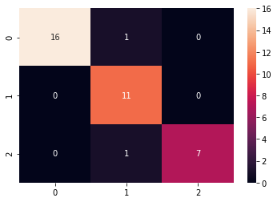
print(classification_report(y_test, y_pred))
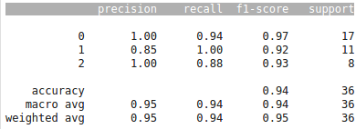
#predict intero dataset
y_pred_tot = classifier.predict(X)
# Making the Confusion Matrix
#from sklearn.metrics import confusion_matrix, classification_report
cmt = confusion_matrix(y, y_pred_tot)
sns.heatmap(cmt, annot=True, fmt='d')
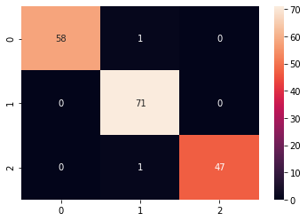
print(classification_report(y, y_pred_tot))
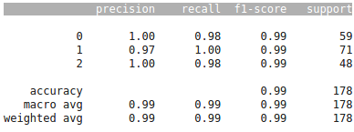
y_pred_tot = classifier.predict(X)
# Making the Confusion Matrix
#from sklearn.metrics import confusion_matrix, classification_report
cmt = confusion_matrix(y, y_pred_tot)
sns.heatmap(cmt, annot=True, fmt='d')
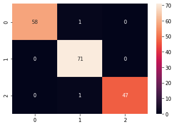
print(classification_report(y, y_pred_tot))
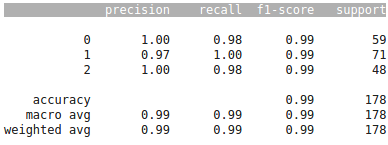
!pip install qiskit-terra[visualization]
!pip install qiskit
import qiskit
import numpy as np
from qiskit.ml.datasets import wine
from qiskit import BasicAer
from qiskit.aqua import QuantumInstance, aqua_globals
from qiskit.aqua.components.feature_maps import SecondOrderExpansion
from qiskit.aqua.algorithms import QSVM
from qiskit.aqua.components.multiclass_extensions import AllPairs
from qiskit.aqua.utils.dataset_helper import get_feature_dimension
from qiskit.aqua.algorithms.many_sample.qsvm._qsvm_estimator import _QSVM_Estimator
from qiskit.ml.datasets import *
n = 2 # dimension of each data point
sample_Total, training_input, test_input, class_labels = wine(
training_size=140,
test_size=30, n=n, plot_data=True
)
total = [test_input[k] for k in test_input]
total_array = np.concatenate(total)
sample_Total, training_input, test_input, class_labels = wine(
training_size=140,
test_size=30, n=n, plot_data=True
)
total = [test_input[k] for k in test_input]
total_array = np.concatenate(total)
aqua_globals.random_seed = 10598
backend = BasicAer.get_backend('qasm_simulator')
feature_map = SecondOrderExpansion(feature_dimension=get_feature_dimension(training_input),
depth=2, entangler_map=[[0, 1]])
svm = QSVM(feature_map, training_input, test_input, total_array,
multiclass_extension=AllPairs(_QSVM_Estimator, [feature_map]))
quantum_instance = QuantumInstance(backend, shots=1024,
seed_simulator=aqua_globals.random_seed,
seed_transpiler=aqua_globals.random_seed)
result = svm.run(quantum_instance)
for k,v in result.items():
print("'{}' : {}".format(k, v))
backend = BasicAer.get_backend('qasm_simulator')
feature_map = SecondOrderExpansion(feature_dimension=get_feature_dimension(training_input),
depth=2, entangler_map=[[0, 1]])
svm = QSVM(feature_map, training_input, test_input, total_array,
multiclass_extension=AllPairs(_QSVM_Estimator, [feature_map]))
quantum_instance = QuantumInstance(backend, shots=1024,
seed_simulator=aqua_globals.random_seed,
seed_transpiler=aqua_globals.random_seed)
result = svm.run(quantum_instance)
for k,v in result.items():
print("'{}' : {}".format(k, v))
Ora sempre con Support Vector Machine classifichiamo di Cancro in Benigno e Maligno.
cancer = load_breast_cancer()
cancer.keys()
cancer.values()
cancer['data'].shape
df = pd.DataFrame(np.c_[cancer['data'],cancer['target']],columns=np.append(cancer['feature_names'], ['target']))
df.head()
#Nell'immagine sottostante i primi record del dataset caricato nel Dataframe df
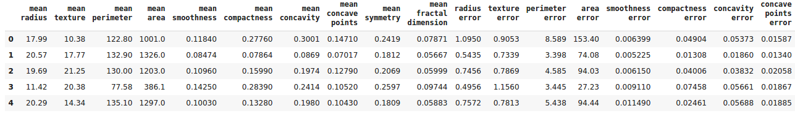
n_train = 500
X = df.drop(['target'],axis=1)
X = X[:n_train]
y = pd.DataFrame(df['target'])
y = y[:n_train]
#dividiamo il file di input in train(80%) e test(20%)
from sklearn.model_selection import train_test_split
X_train, X_test, y_train, y_test = train_test_split(X,y, test_size= 0.2, random_state = 5)
X_train = np.array(X_train)
X_test = np.array(X_test)
y_train = np.array(y_train)
y_test = np.array(y_test)
#Standardizzazione dei dati per agrvolare i calcoli
from sklearn.preprocessing import StandardScaler
sc = StandardScaler()
X_train = sc.fit_transform(X_train)
X_test = sc.transform(X_test)
X = sc.transform(X)
from sklearn.svm import SVC
from sklearn.metrics import confusion_matrix, classification_report
classifier = SVC()
#classificazione - creazione del modello
classifier.fit(X_train, y_train)
#previsione dei dati di test
# Predicting the Test set results
y_pred = classifier.predict(X_test)
# Making the Confusion Matrix
#confronto dati reali con quelli predetti sopra
cm = confusion_matrix(y_test, y_pred)
#grafico con risultati ottenuti
sns.heatmap(cm, annot=True )
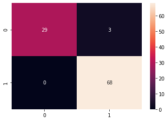
print(classification_report(y_test, y_pred))
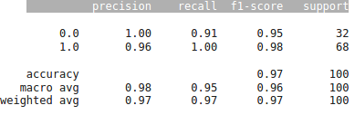
#predict intero dataset
y_pred_tot = classifier.predict(X)
# Making the Confusion Matrix
#from sklearn.metrics import confusion_matrix, classification_report
cmt = confusion_matrix(y, y_pred_tot)
sns.heatmap(cmt, annot=True, fmt='d')
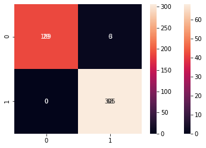
print(classification_report(y, y_pred_tot))
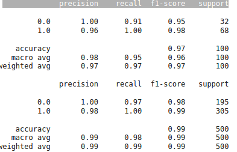
Ripetiamo ora la classificazione di Cancro in Benigno e Maligno ma con
il Quantum SVM
from qiskit import BasicAer
from qiskit.aqua.utils import split_dataset_to_data_and_labels
from qiskit.aqua.utils import map_label_to_class_name
from qiskit.aqua.input import ClassificationInput
from qiskit.aqua import run_algorithm, QuantumInstance
from qiskit.aqua.algorithms import QSVM
from qiskit.aqua.components.feature_maps import SecondOrderExpansion
feature_dim=2
sT, training_input, test_input, class_labels = ad_hoc_data(
training_size=400,
test_size=100,
n=feature_dim,
gap=0.3,
plot_data=True
)

test_data = sample_ad_hoc_data(sT, test_size=100, n=feature_dim)
datapoints, class_to_label = split_dataset_to_data_and_labels(test_data)
seed = 10598
feature_map = SecondOrderExpansion(feature_dimension=n,
depth=2,
entanglement='linear')
qsvm = QSVM(feature_map, training_input, test_input, datapoints[0])
backend = BasicAer.get_backend('qasm_simulator')
quantum_instance = QuantumInstance(backend, shots=1024, seed_transpiler=seed)
result = qsvm.run(quantum_instance)
result['test_success_ratio']
1.0
result['testing_accuracy']
1.0